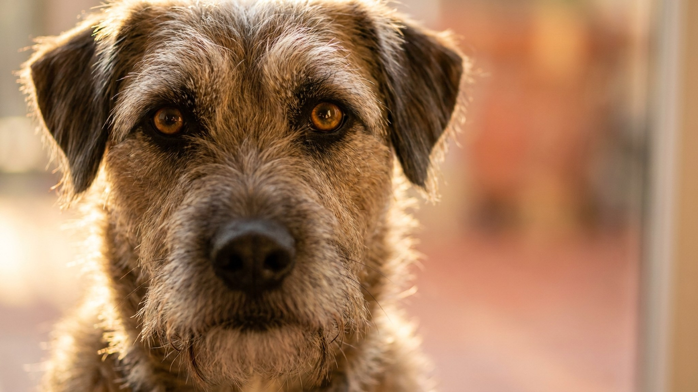

Через пару месяцев после операции хозяева замечают одно и то же: питомец заметно округлился, хотя ест «как раньше». Дело не в нарушении обмена веществ и не в болезни. После стерилизации или кастрации организм просто тратит меньше энергии, а аппетит при этом растёт. Разбираем, что именно меняется и как скорректировать рацион, чтобы кот или собака остались в форме.
🐾 Не уверены, что рацион подходит?
Напишите в AnimaLife, чем кормите, — приложение покажет, чего не хватает, и рассчитает порцию под вес, возраст и активность. Бесплатно.
Проверить рацион → Проверить в MAX →
У вас iPhone? AnimaLife есть в App Store
После стерилизации или кастрации организм перестаёт тратить энергию на половые гормоны и связанное с ними поведение: поиск партнёра, тревожность, метки. Потребность в калориях падает примерно на 20-30%. При этом аппетит у многих животных растёт - гормональный фон меняется, и центр насыщения в мозге работает иначе.
Если продолжать кормить той же порцией, что и до операции, лишние калории просто откладываются. Обмен веществ тут ни при чём - чистая физиология. Хорошая новость: вес после стерилизации отлично регулируется через порцию и состав корма. Ожирение здесь совсем не приговор.
Первое, что стоит сделать, - уменьшить суточную норму на 20-25% от той, что была до операции. Но не наугад: взвешивайте питомца раз в две-три недели. Для кошек хороший ориентир - 3,5-4,5 кг в зависимости от породы, для собак рамки шире и зависят от размера.
Линейки с пометкой «для стерилизованных» - не маркетинг ради маркетинга. У них сниженная калорийность при нормальном объёме порции, то есть питомец наедается, но не переедает. Плюс скорректированный белок: его больше, чтобы сохранить мышечную массу при меньшем количестве жира.
На что смотреть на упаковке: белок на первом месте в составе (курица, индейка, рыба), а не злаки. Жир умеренный - в пределах 10-14% для кошек и 8-12% для собак. Если питомец на натуральном питании, обсудите коррекцию с ветеринарным диетологом: там пересчёт сложнее.
Стерилизованные животные часто становятся спокойнее. Это нормально, но меньше движения плюс прежний аппетит - прямой путь к лишнему весу. Добавить активность несложно.
Не нужно взвешивать питомца каждую неделю годами. Достаточно трёх простых проверок.
Рёбра. Прощупайте бока: рёбра должны чувствоваться под слоем шерсти, но не выпирать. Не чувствуются через явный жировой слой - пора урезать порцию.
Талия. Посмотрите на питомца сверху. У кошки и собаки в норме есть небольшое сужение за рёбрами. Если фигура стала «колбасой» без перехвата - сигнал к действию.
Весы. Взвешивайте раз в месяц в первые полгода после операции. Потом - раз в три месяца. Резкий набор 200-300 г за месяц у кошки или 500+ г у собаки - повод обсудить рацион с ветеринаром.
Материал носит информационный характер и не заменяет очную консультацию ветеринара.
🐾 Соберите рацион под своего питомца
AnimaLife учитывает породу, возраст, вес и образ жизни и подсказывает, сколько и чем кормить. Плюс напоминания о кормлении и контроль веса.
Собрать рацион → Собрать в MAX →
У вас iPhone? AnimaLife есть в App Store
🐾 Понравился разбор?
Подпишитесь на канал — каждый день разбираем по одному тревожному симптому у кошек и собак: что в пределах нормы, а когда пора к врачу. Подпишитесь, чтобы не пропустить разбор, который может спасти здоровье вашего питомца.